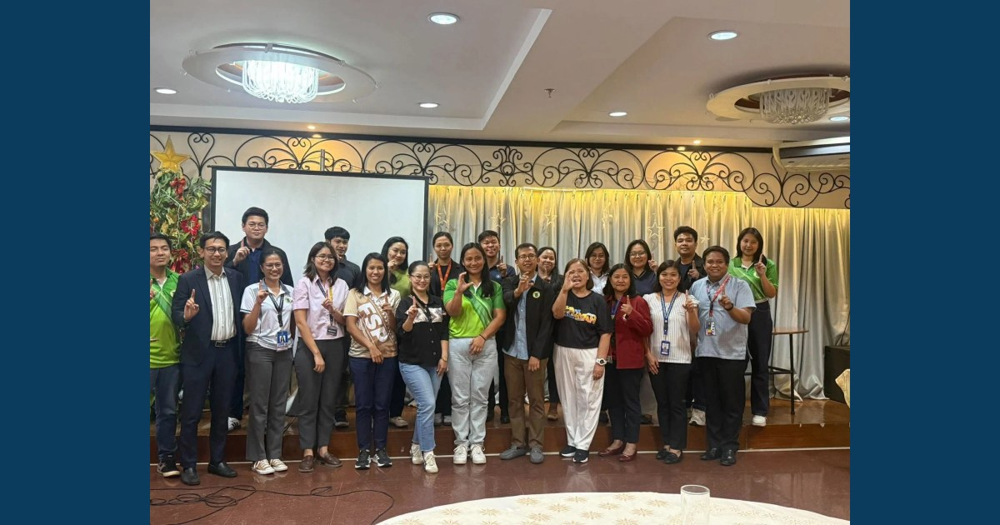

MCNP–ISAP Research Director Dr. Ryan C. Fontanilla Participates in Cagayan Provincial Research and Innovation Committee Pre-Convening Meeting

Dr. Ryan C. Fontanilla represented MCNP–ISAP at the November 18, 2026 pre-convening meeting in Tuguegarao City, contributing to discussions on provincial research coordination, innovation, and institutional collaboration.
Read full article